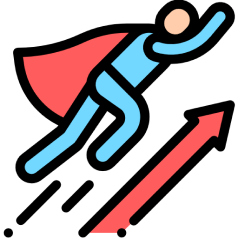

Act on the Basic, Communicative Developer.

세상에 가진 불편함을 개발로 풀어가는 허상진입니다.
Act: 부족한 부분을 발견하면 책임감을 갖고 행동하며, 결과에 대한 성취감을 갖습니다.
Basic: '문제는 가까이에 있다'라는 대원칙과 함께, 오랜 시간이 걸리더라도 편법 없이 청사진에 맞는 일을 합니다.
Communicate: 모든 인연을 소중히 여기고 함께 성장하는 삶을 지향하며, 최고의 결과물을 위한 '건전한 갈등'을 즐깁니다.
Develop: 새로운 기술을 받아들임에 두려움이 없으며, 비판적인 시선과 함께 발전을 위한 고민을 멈추지 않습니다.